Python Examples¶
In this chapter we illustrate the functions in the library with some simple examples.
Chordal matrices¶
We start by creating a 10 by 10 sparse symmetric matrix.
(1)![A = \left[ \begin{array}{cccccccccc}
4.86 & 0 & 0 & 0 & 0 & -2.60 & 0 & 0 & 0 & 0 \\
0 & 5.13 & 0 & 0 & 0 & 0 & 0 & 0 & 0 & 0 \\
0 & 0 & 5.03 & 1.29 & 1.41 & 0 & 0 & 2.05 & 0 & 0.04 \\
0 & 0 & 1.29 & 0.99 & 0 & 0 & 0 & 0 & 0 & -0.79 \\
0 & 0 & 1.41 & 0 & 5.45 & 0 & 0 & 0 & 0 & 0 \\
-2.60 & 0 & 0 & 0 & 0 & 2.60 & 0.17 & 0 & 0 & 0 \\
0 & 0 & 0 & 0 & 0 & 0.17 & 1.16 & 0 & 0 & 0 \\
0 & 0 & 2.05 & 0 & 0 & 0 & 0 & 1.64 & 0 & 0.21 \\
0 & 0 & 0 & 0 & 0 & 0 & 0 & 0 & 2.48 & 0 \\
0 & 0 & 0.04 & -0.79 & 0 & 0 & 0 & 0.21 & 0 & 4.21
\end{array}\right ]](_images/math/100a1b11d1bb0a6b4a9eb150e5c73a2e241801fa.png)
>>> from cvxopt import matrix, spmatrix, printing
>>> printing.options['width'] = -1
>>> V = [4.86, -2.60, 5.13, 5.03, 1.29, 1.41, 2.05, 0.04, 0.99, -0.79, 5.45, 2.60, 0.17, 1.16, 1.64, 0.21, 2.48, 4.21]
>>> I = [0, 5, 1, 2, 3, 4, 7, 9, 3, 9, 4, 5, 6, 6, 7, 9, 8, 9]
>>> J = [0, 0, 1, 2, 2, 2, 2, 2, 3, 3, 4, 5, 5, 6, 7, 7, 8, 9]
>>> A = spmatrix(V, I, J)
>>> print A
[ 4.86e+00 0 0 0 0 0 0 0 0 0 ]
[ 0 5.13e+00 0 0 0 0 0 0 0 0 ]
[ 0 0 5.03e+00 0 0 0 0 0 0 0 ]
[ 0 0 1.29e+00 9.90e-01 0 0 0 0 0 0 ]
[ 0 0 1.41e+00 0 5.45e+00 0 0 0 0 0 ]
[-2.60e+00 0 0 0 0 2.60e+00 0 0 0 0 ]
[ 0 0 0 0 0 1.70e-01 1.16e+00 0 0 0 ]
[ 0 0 2.05e+00 0 0 0 0 1.64e+00 0 0 ]
[ 0 0 0 0 0 0 0 0 2.48e+00 0 ]
[ 0 0 4.00e-02 -7.90e-01 0 0 0 2.10e-01 0 4.21e+00]
The natural ordering is not a perfect elimination ordering for this matrix, as can be verified by calling the function peo.
>>> import chompack
>>> chompack.peo(A, matrix(range(10)))
False
However, the matrix is chordal, and we can find a perfect elmination ordering via the maximum cardinality search algorithm.
>>> p1 = chompack.maxcardsearch(A)
>>> print p1
[ 1]
[ 0]
[ 5]
[ 6]
[ 8]
[ 4]
[ 7]
[ 3]
[ 2]
[ 9]
>>> chompack.peo(A, p1)
True
Equivalently, the natural ordering is a perfect elimination ordering for the permuted matrix A[p1, p1].
>>> chompack.peo(A[p1, p1], matrix(range(10)))
True
Another perfect elimination ordering is defined below.
>>> p2 = matrix([ 1, 4, 7, 3, 2, 9, 0, 6, 5, 8 ])
>>> chompack.peo(A, p2)
True
>>> chompack.peo(A[p2, p2], matrix(range(10)))
True
Next, we use the embed function to convert A to a chordal matrix.
>>> Ac, nfill = chompack.embed(A, p1)
>>> print Ac
<PyCObject object at 0x7f07853bd170>
>>> print nfill
0
The created chordal matrix object Ac is an opaque C object, containing the sparsity pattern and the numerical values of A, and the permutation used to create Ac. The variable nfill shows that no fill-in was produced when embedding the sparsity pattern of A in a chordal pattern. This confirms that p1 is indeed a perfect elimination ordering.
The chordal matrix can be converted back to CVXOPT using the sparse function. sparse returns the lower triangular part of the matrix. If needed, the symmetrize function provides an efficient method for converting the lower triangular matrix to symmetric.
>>> print chompack.sparse(Ac)
[ 4.86e+00 0 0 0 0 0 0 0 0 0 ]
[ 0 5.13e+00 0 0 0 0 0 0 0 0 ]
[ 0 0 5.03e+00 0 0 0 0 0 0 0 ]
[ 0 0 1.29e+00 9.90e-01 0 0 0 0 0 0 ]
[ 0 0 1.41e+00 0 5.45e+00 0 0 0 0 0 ]
[-2.60e+00 0 0 0 0 2.60e+00 0 0 0 0 ]
[ 0 0 0 0 0 1.70e-01 1.16e+00 0 0 0 ]
[ 0 0 2.05e+00 0 0 0 0 1.64e+00 0 0 ]
[ 0 0 0 0 0 0 0 0 2.48e+00 0 ]
[ 0 0 4.00e-02 -7.90e-01 0 0 0 2.10e-01 0 4.21e+00]
>>> print chompack.symmetrize(chompack.sparse(Ac))
[ 4.86e+00 0 0 0 0 -2.60e+00 0 0 0 0 ]
[ 0 5.13e+00 0 0 0 0 0 0 0 0 ]
[ 0 0 5.03e+00 1.29e+00 1.41e+00 0 0 2.05e+00 0 4.00e-02]
[ 0 0 1.29e+00 9.90e-01 0 0 0 0 0 -7.90e-01]
[ 0 0 1.41e+00 0 5.45e+00 0 0 0 0 0 ]
[-2.60e+00 0 0 0 0 2.60e+00 1.70e-01 0 0 0 ]
[ 0 0 0 0 0 1.70e-01 1.16e+00 0 0 0 ]
[ 0 0 2.05e+00 0 0 0 0 1.64e+00 0 2.10e-01]
[ 0 0 0 0 0 0 0 0 2.48e+00 0 ]
[ 0 0 4.00e-02 -7.90e-01 0 0 0 2.10e-01 0 4.21e+00]
If we wish to create another chordal matrix with the same sparsity pattern as Ac, but different numerical values, we use the project function. In the following code, we create a chordal matrix Bc with the same sparsity pattern as Ac.
>>> Bc = chompack.project(Ac, matrix(range(100), (10,10), 'd'))
>>> print chompack.sparse(Bc)
[ 0.00e+00 0 0 0 0 0 0 0 0 0 ]
[ 0 1.10e+01 0 0 0 0 0 0 0 0 ]
[ 0 0 2.20e+01 0 0 0 0 0 0 0 ]
[ 0 0 3.20e+01 3.30e+01 0 0 0 0 0 0 ]
[ 0 0 4.20e+01 0 4.40e+01 0 0 0 0 0 ]
[ 5.00e+00 0 0 0 0 5.50e+01 0 0 0 0 ]
[ 0 0 0 0 0 5.60e+01 6.60e+01 0 0 0 ]
[ 0 0 7.20e+01 0 0 0 0 7.70e+01 0 0 ]
[ 0 0 0 0 0 0 0 0 8.80e+01 0 ]
[ 0 0 2.90e+01 3.90e+01 0 0 0 7.90e+01 0 9.90e+01]
The function project projects the dense or sparse matrix given as second argument onto the chordal sparsity pattern defined by Ac. The chordal matrix object Bc reuses the data structure of Ac (except, obviously, for the numerical values of the nonzeros), and will therefore be recognized by other functions as having the same sparsity pattern as Ac. It is important to understand that only chordal matrices derived from the same chordal matrix object (for example, using project) are recognized as having the same sparsity pattern. If we had created the Bc using the embed function, for example, the chordal matrices Bc and Ac would not be recognized as having the same sparsity pattern.
>>> Bc, nfill = chompack.embed(spmatrix(1.0, A.I, A.J), p1)
>>> print chompack.dot(Ac, Bc)
Traceback (most recent call last):
File "<stdin>", line 1, in <module>
TypeError: X and Y must have the same chordal pattern
>>> Bc = chompack.project(Ac, spmatrix(1.0, A.I, A.J))
>>> print chompack.dot(Ac, Bc)
37.11
Returning to the chordal embedding, let us look at the result of converting A to a chordal matrix object, using the (default) natural ordering:
>>> Ac2, nfill2 = chompack.embed(A)
>>> nfill2
4
The natural ordering is not a perfect elimination ordering for A, so some fill-in is necessary to embed the sparsity pattern in a chordal pattern that has the natural ordering as a perfect elimination ordering. If we convert the embedded matrix back to CVXOPT we notice the four new nonzero positions in columns 4 and 5.
>>> print chompack.sparse(Ac2)
[ 4.86e+00 0 0 0 0 0 0 0 0 0 ]
[ 0 5.13e+00 0 0 0 0 0 0 0 0 ]
[ 0 0 5.03e+00 0 0 0 0 0 0 0 ]
[ 0 0 1.29e+00 9.90e-01 0 0 0 0 0 0 ]
[ 0 0 1.41e+00 0.00e+00 5.45e+00 0 0 0 0 0 ]
[-2.60e+00 0 0 0 0 2.60e+00 0 0 0 0 ]
[ 0 0 0 0 0 1.70e-01 1.16e+00 0 0 0 ]
[ 0 0 2.05e+00 0.00e+00 0.00e+00 0 0 1.64e+00 0 0 ]
[ 0 0 0 0 0 0 0 0 2.48e+00 0 ]
[ 0 0 4.00e-02 -7.90e-01 0.00e+00 0 0 2.10e-01 0 4.21e+00]
As another example, consider the following matrix with non-chordal sparsity pattern
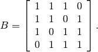
A chordal embedding of B will always produce fill-in.
>>> B = spmatrix([1,1,1,1,1,1,1,1], [0,1,2,1,3,2,3,3], [0,0,0,1,1,2,2,3])
>>> Bc, nfill = chompack.embed(B, chompack.maxcardsearch(B))
>>> nfill
1
>>> print chompack.sparse(Bc)
[ 1.00e+00 0 0 0 ]
[ 1.00e+00 1.00e+00 0 0 ]
[ 1.00e+00 0 1.00e+00 0 ]
[ 0.00e+00 1.00e+00 1.00e+00 1.00e+00]
In other words, the maximum cardinality search ordering for B is not a perfect elimination order
>>> chompack.peo(B, chompack.maxcardsearch(B))
False
Cholesky factorization¶
The matrix  in (1) can be factored as
in (1) can be factored as
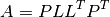
using the cholesky function.
>>> L = chompack.cholesky(Ac)
>>> print chompack.sparse(L)
[ 2.26e+00 0 0 0 0 0 0 0 0 0 ]
[ 0 2.20e+00 0 0 0 0 0 0 0 0 ]
[ 0 -1.18e+00 1.10e+00 0 0 0 0 0 0 0 ]
[ 0 0 1.55e-01 1.07e+00 0 0 0 0 0 0 ]
[ 0 0 0 0 1.57e+00 0 0 0 0 0 ]
[ 0 0 0 0 0 2.33e+00 0 0 0 0 ]
[ 0 0 0 0 0 0 1.28e+00 0 0 0 ]
[ 0 0 0 0 0 0 0 9.95e-01 0 0 ]
[ 0 0 0 0 0 6.04e-01 1.60e+00 1.30e+00 6.49e-01 0 ]
[ 0 0 0 0 0 0 1.64e-01 -7.94e-01 1.24e+00 1.42e+00]
Comparing the sparsity pattern of L with the sparsity pattern of
A[p1, p1], ie, as the matrix  , shows that no fill-in
occurred during the factorization.
, shows that no fill-in
occurred during the factorization.
>>> print chompack.symmetrize(A)[p1, p1]
[ 5.13e+00 0 0 0 0 0 0 0 0 0 ]
[ 0 4.86e+00 -2.60e+00 0 0 0 0 0 0 0 ]
[ 0 -2.60e+00 2.60e+00 1.70e-01 0 0 0 0 0 0 ]
[ 0 0 1.70e-01 1.16e+00 0 0 0 0 0 0 ]
[ 0 0 0 0 2.48e+00 0 0 0 0 0 ]
[ 0 0 0 0 0 5.45e+00 0 0 1.41e+00 0 ]
[ 0 0 0 0 0 0 1.64e+00 0 2.05e+00 2.10e-01]
[ 0 0 0 0 0 0 0 9.90e-01 1.29e+00 -7.90e-01]
[ 0 0 0 0 0 1.41e+00 2.05e+00 1.29e+00 5.03e+00 4.00e-02]
[ 0 0 0 0 0 0 2.10e-01 -7.90e-01 4.00e-02 4.21e+00]
We can verify the correctness of the factorization by computing the
matrix 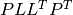 and comparing with .
>>> print chompack.sparse( chompack.llt(L) )
[ 4.86e+00 0 0 0 0 0 0 0 0 0 ]
[ 0 5.13e+00 0 0 0 0 0 0 0 0 ]
[ 0 0 5.03e+00 0 0 0 0 0 0 0 ]
[ 0 0 1.29e+00 9.90e-01 0 0 0 0 0 0 ]
[ 0 0 1.41e+00 0 5.45e+00 0 0 0 0 0 ]
[-2.60e+00 0 0 0 0 2.60e+00 0 0 0 0 ]
[ 0 0 0 0 0 1.70e-01 1.16e+00 0 0 0 ]
[ 0 0 2.05e+00 0 0 0 0 1.64e+00 0 0 ]
[ 0 0 0 0 0 0 0 0 2.48e+00 0 ]
[ 0 0 4.00e-02 -7.90e-01 0 0 0 2.10e-01 0 4.21e+00]
Now suppose we wish to solve a linear equation
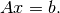
This can be done via two calls to the solve function.
>>> x = matrix(1.0, (10,1))
>>> chompack.solve(L, x)
>>> chompack.solve(L, x, 1)
>>> print x
[ 8.33e-01]
[ 1.95e-01]
[-9.19e+00]
[ 1.50e+01]
[ 2.56e+00]
[ 1.17e+00]
[ 6.90e-01]
[ 1.18e+01]
[ 4.03e-01]
[ 2.56e+00]
>>> from cvxopt import blas
>>> print blas.nrm2(chompack.symmetrize(A)*x - 1.0)
4.79713995204e-15
Partial inverse¶
The partial_inv function evaluates the projected inverse of a positive definite chordal matrix,
(2)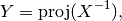
i.e., it computes the entries of the inverse of  in the positions
of the nonzeros of . As input, the function uses the Cholesky
factor of X.
in the positions
of the nonzeros of . As input, the function uses the Cholesky
factor of X.
As an example we compute the partial inverse of the matrix
in (1).
>>> Y = chompack.partial_inv(L)
>>> print chompack.sparse(Y)
[ 4.47e-01 0 0 0 0 0 0 0 0 0 ]
[ 0 1.95e-01 0 0 0 0 0 0 0 0 ]
[ 0 0 4.19e+00 0 0 0 0 0 0 0 ]
[ 0 0 -6.22e+00 1.04e+01 0 0 0 0 0 0 ]
[ 0 0 -1.08e+00 0 4.64e-01 0 0 0 0 0 ]
[ 4.52e-01 0 0 0 0 8.44e-01 0 0 0 0 ]
[ 0 0 0 0 0 -1.24e-01 8.80e-01 0 0 0 ]
[ 0 0 -5.12e+00 0 0 0 0 6.86e+00 0 0 ]
[ 0 0 0 0 0 0 0 0 4.03e-01 0 ]
[ 0 0 -9.52e-01 1.64e+00 0 0 0 1.13e+00 0 4.98e-01]
In the following example we compare the result of partial_inv with the dense full inverse of a matrix with a chordal arrow pattern.
>>> B = spmatrix([10,1,10,1,10,1,10,1,10], [0,4,1,4,2,4,3,4,4], [0,0,1,1,2,2,3,3,4])
>>> print B
[ 1.00e+01 0 0 0 0 ]
[ 0 1.00e+01 0 0 0 ]
[ 0 0 1.00e+01 0 0 ]
[ 0 0 0 1.00e+01 0 ]
[ 1.00e+00 1.00e+00 1.00e+00 1.00e+00 1.00e+01]
>>> Bc, nfill = chompack.embed(B)
>>> L2 = chompack.cholesky(Bc)
>>> Z = chompack.partial_inv(L2)
>>> print chompack.sparse(Z)
[ 1.01e-01 0 0 0 0 ]
[ 0 1.01e-01 0 0 0 ]
[ 0 0 1.01e-01 0 0 ]
[ 0 0 0 1.01e-01 0 ]
[-1.04e-02 -1.04e-02 -1.04e-02 -1.04e-02 1.04e-01]
>>> Binv = matrix(0.0, (5,5))
>>> Binv[::6] = 1.0
>>> chompack.solve(L2, Binv)
>>> chompack.solve(L2, Binv, 1)
>>> print Binv
[ 1.01e-01 1.04e-03 1.04e-03 1.04e-03 -1.04e-02]
[ 1.04e-03 1.01e-01 1.04e-03 1.04e-03 -1.04e-02]
[ 1.04e-03 1.04e-03 1.01e-01 1.04e-03 -1.04e-02]
[ 1.04e-03 1.04e-03 1.04e-03 1.01e-01 -1.04e-02]
[-1.04e-02 -1.04e-02 -1.04e-02 -1.04e-02 1.04e-01]
Positive definite completion¶
The completion function returns the Cholesky factor of the inverse
of the maximum determinant positive definite completion of a chordal
matrix.
This is the inverse operation of partial_inv. Given a chordal
matrix 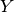, it finds a positive definite chordal matrix
that satisfies the nonlinear equation (2).
As an example, we verify that completion(Y) returns the
Cholesky factor  of .
of .
>>> print chompack.sparse( chompack.completion(Y) )
[ 2.26e+00 0 0 0 0 0 0 0 0 0 ]
[ 0 2.20e+00 0 0 0 0 0 0 0 0 ]
[ 0 -1.18e+00 1.10e+00 0 0 0 0 0 0 0 ]
[ 0 0 1.55e-01 1.07e+00 0 0 0 0 0 0 ]
[ 0 0 0 0 1.57e+00 0 0 0 0 0 ]
[ 0 0 0 0 0 2.33e+00 0 0 0 0 ]
[ 0 0 0 0 0 0 1.28e+00 0 0 0 ]
[ 0 0 0 0 0 0 0 9.95e-01 0 0 ]
[ 0 0 0 0 0 6.04e-01 1.60e+00 1.30e+00 6.49e-01 0 ]
[ 0 0 0 0 0 0 1.64e-01 -7.94e-01 1.24e+00 1.42e+00]
Factored Hessian¶
Consider the log-det barrier
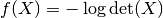
as a function of the positive definite matrices with a given chordal
pattern. The Hessian of  , at a positive definite , is
a linear mapping that maps chordal matrices to chordal matrices.
We use the notation
, at a positive definite , is
a linear mapping that maps chordal matrices to chordal matrices.
We use the notation
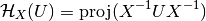
to denote this mapping. The hessian function evaluates the Hessian in a factored form
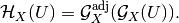
It can also be used to evaluate the inverse of these operations.
In the following example, we compute 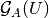 for the
matrix in (1).
>>> U = chompack.project(Ac, matrix(2.0, (10,10)))
>>> chompack.hessian(L, Y, [U])
>>> print chompack.sparse(U)
[ 4.12e-01 0 0 0 0 0 0 0 0 0 ]
[ 0 3.90e-01 0 0 0 0 0 0 0 0 ]
[ 0 0 -6.15e+00 0 0 0 0 0 0 0 ]
[ 0 0 -2.93e+00 2.02e+00 0 0 0 0 0 0 ]
[ 0 0 1.30e+00 0 3.67e-01 0 0 0 0 0 ]
[ 1.28e+00 0 0 0 0 3.90e+00 0 0 0 0 ]
[ 0 0 0 0 0 1.14e+00 1.35e+00 0 0 0 ]
[ 0 0 -6.01e-01 0 0 0 0 1.22e+00 0 0 ]
[ 0 0 0 0 0 0 0 0 8.06e-01 0 ]
[ 0 0 1.56e+00 1.92e+00 0 0 0 1.49e+00 0 4.97e+00]
The hessian function overwrites U with the result. Note that we used project to create the U chordal matrix. This ensures that the sparsity pattern of the projection is treated as identical to the sparsity pattern of X.
As another example, we check the relation
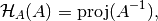
which follows from the definition of the Hessian and the projected inverse.
>>> U = chompack.project(Ac, A)
>>> chompack.hessian(L, Y, [U])
>>> chompack.hessian(L, Y, [U], adj = True)
>>> print chompack.sparse(U)
[ 4.47e-01 0 0 0 0 0 0 0 0 0 ]
[ 0 1.95e-01 0 0 0 0 0 0 0 0 ]
[ 0 0 4.19e+00 0 0 0 0 0 0 0 ]
[ 0 0 -6.22e+00 1.04e+01 0 0 0 0 0 0 ]
[ 0 0 -1.08e+00 0 4.64e-01 0 0 0 0 0 ]
[ 4.52e-01 0 0 0 0 8.44e-01 0 0 0 0 ]
[ 0 0 0 0 0 -1.24e-01 8.80e-01 0 0 0 ]
[ 0 0 -5.12e+00 0 0 0 0 6.86e+00 0 0 ]
[ 0 0 0 0 0 0 0 0 4.03e-01 0 ]
[ 0 0 -9.52e-01 1.64e+00 0 0 0 1.13e+00 0 4.98e-01]